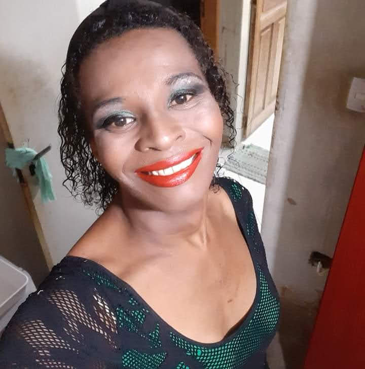
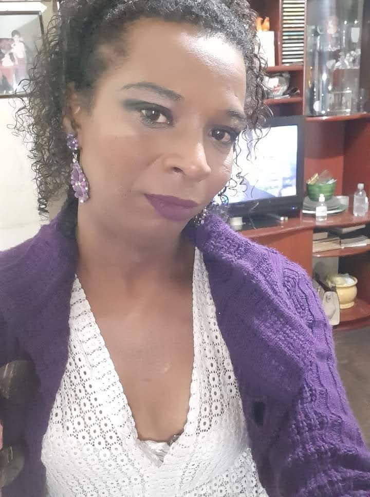
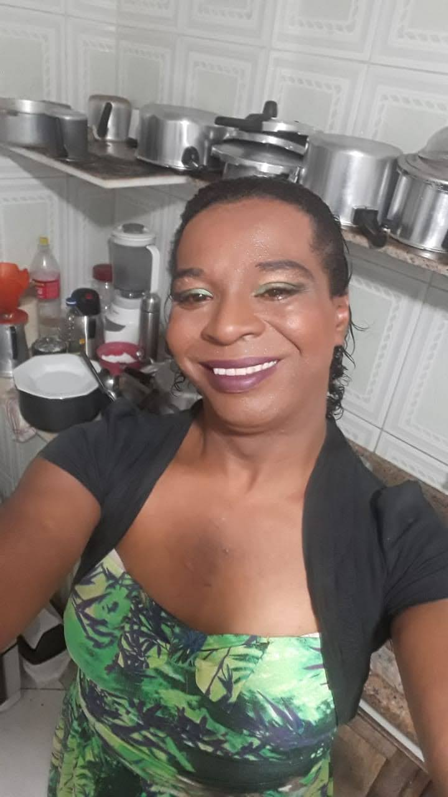

Elizabeth dos Santos, nasceu em Piracicaba SP em 1987, mais conhecida como Beth,sou uma transexual,cozinheira e começando uma carreira nova na tecnologia, com muita vontade de aprender e fazer a diferença.
De uma família humilde, filha de um pedreiro e uma lavadeira de roupa que tenho muito Orgulho. Meus pais eram evangélicos, não tive muito contato com a televisão e rádio, pois a religião deles não permitia uso destes aparelhos. Fui criada dentro de casa. Quando fui para a escola me encantei com um mundo totalmente novo. Me esforcei ao máximo para aprender a ler o mais rápido possível e comecei a ler, fiquei maravilhada com este novo mundo kkk!
Na escola tive contato com a televisão e conheci músicas, era lindo cada desenho que assistia ficava encantada. Com isso fui tendo uma mente ampla e com muita vontade de ler e descobrir o máximo de coisa possível.
Sempre me esforcei para ser uma das melhores da sala, meu sonho desde criança sempre foi ficar na frente do computador, na época não sabia o que queria fazer kkk, mas tinha que ser com um computador.
Conforme fui crescendo, me descobri ser uma pessoa trans, na época não tinha esse termo kkk, mas com isso veio o preconceito, ainda mais que sempre fui uma mulher de personalidade forte e muito sonhadora, então sai logo do armário, isso me causou muito sofrimento e preconceito, mas continuei firme estudando, sempre querendo ser uma pessoa bem sucedida, me destacava entre os alunos, mas por causa do preconceito sempre fui afetada com isso. Não importa o quão boa você seja, você não se encaixava na sociedade moralista da época.
Fiz de tudo para meu pai me pagar um curso de computação, até que fiz o básico. Me sentia maravilhosa por ter conseguido aprender a mexer em um computador.
Continuei lutando e me esforçando para sempre estar entre as melhores, mas nem tudo é um mar de rosas e varias vezes quis desistir. Mas consegui seguir em frente. Quando entrei no ensino médio, fiz a prova e consegui passar para fazer um curso no SENAI. Como sempre gostei de dança acabei fazendo balé clássico, sempre sendo bolsista. Saia de casa as 6h20 da manhã e voltava as 22hrs da noite todos os dias. Foi bem complicado e cansativo.
Com todas as dificuldades consegui acabar com os estudos. Como dizia minha mãe as vezes temos que engolir enxada de travessado.
Outra luta começou para conseguir arrumar um emprego, comecei a trabalhar como operadora de caixa no Wallmart, mas acabei perdendo o emprego.
Não conseguia achar um trabalho e acabei encontrando em outra área na cozinha, trabalhar em restaurante é muito cansativo, estou nesta área ate hoje, mas tenho para entrar e não tenho para sair, tenho uma folga por semana, sábado, domingo e feriado sempre trabalhando.
Com isso acabei deixando muito de meus sonhos para trás, mas agora resolvi realmente correr atras do meu sonho de criança na área da programação, tenho um longo caminho a seguir, mas vou vencer. Já comecei vários cursos e não acabei por canseira, desanimo, mas vou focar e mudar de área.
Amei fazer parte deste curso obrigada pela oportunidade PrograMaria. Beijos.
